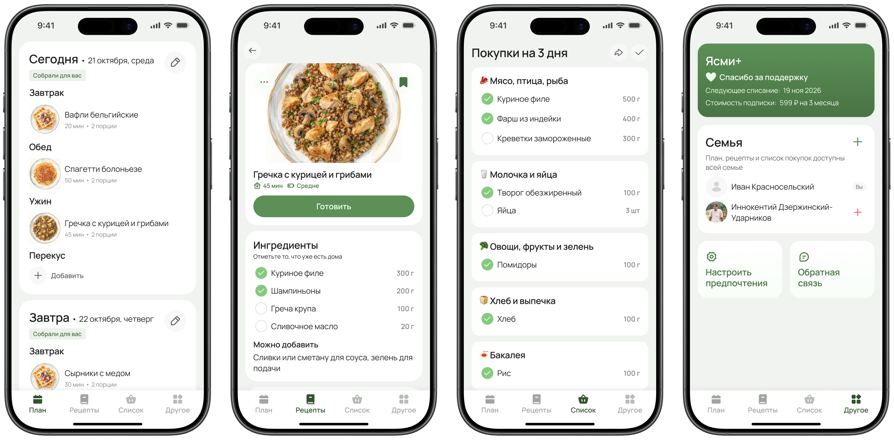

От библиотеки рецептов к продукту, который принимает решения
Как исследования изменили концепцию приложения для планирования питания и хранения рецептов

о продукте
Ясми помогает решить ежедневный вопрос «что приготовить?» и сразу превращает меню в список покупок.
Это веб-приложение и Telegram-бот: они собирают план из знакомых блюд, а рецепты из ссылок на видео, текста и изображений сохраняют в библиотеку с помощью ИИ.
моя роль
Ясми — пет-проект, который мы разрабатываем вдвоём по вечерам и выходным без внешнего финансирования.
Я отвечаю за
- дизайн и сценарии
- исследования и продуктовую стратегию
- информационную архитектуру
- фронтенд с помощью Cursor
Партнёр отвечает за
- бэкенд
- ИИ
- инфраструктуру
контекст
Идея появилась из личной проблемы. Когда еда заканчивалась, приходилось снова выбирать блюда, искать рецепты, обсуждать меню с партнёром и составлять список покупок.
Мне хотелось создать ощущение спокойствия: решение уже принято, но его можно изменить. Отсюда и название Ясми — короткое, мягкое и созвучное слову «ясно».
первая гипотеза
Сначала я представляла продукт как библиотеку рецептов с планировщиком меню. Первые вайрфреймы строились вокруг простого сценария:
- 01сохранить рецепт
- 02составить меню
- 03получить список покупок
Исследование показало, что сложность возникает раньше — в момент выбора блюда.
исследование
Я проверила, существует ли проблема у других людей и как они справляются с планированием еды.
ответов на опрос
50 ответов вошли в анализ: люди готовят минимум раз в 2–3 дня, сталкиваются с трудностями в организации питания и уверенно пользуются цифровыми сервисами.
глубинных интервью
Я поговорила с людьми, у которых есть минимум две трудности в планировании или готовке и уже сложились собственные способы организации питания.
Показаны самые частые ответы из опроса.
«Я несколько раз просила нейросеть составить мне меню, потому что хочу питаться разнообразнее и полезнее, но потом я забываю и забиваю»
«На поиски рецептов я могу потратить час. Или продукты дорогие, или рецепт сложный, или слишком долгий процесс»
«Я часто покупаю продукты в хорошем настроении, а потом нет времени — и продукты пропадают»
существующие решения
Я несколько месяцев пробовала доставки продуктовых наборов, в том числе Elementaree и Шефмаркет. Они помогают разнообразить рацион, но не закрывают завтраки, ограничивают выбор и не позволяют готовить любимые блюда.
Чаще люди собирают собственную систему из поиска, соцсетей, заметок и доставки. Каждый сервис помогает на одном этапе, но самый сложный вопрос — что приготовить — остаётся у человека.
ключевые инсайты
В рутине не ищут новые рецепты
Чаще перебирают блюда, которые уже умеют готовить.
ИИ должен предлагать сам
Если нужно нажать «Подобрать меню», решение всё ещё принимает пользователь.
Долгий план не работает
Даже подготовленное заранее меню часто меняется в последний момент.
Проблема не в хранении рецептов
Люди устают каждый день принимать одно и то же бытовое решение.
продуктовые принципы
Каждое решение проверяла одним вопросом: уменьшает ли оно число действий и решений пользователя?
- 01
План никогда не пустой
Если пользователь ничего не запланировал, Ясми собирает меню и показывает его как «Собрано для вас».
- 02
Сначала знакомая еда
80% базы — привычные блюда, 20% — рецепты для постепенного разнообразия.
- 03
Рецепт сохраняется без усилий
Достаточно отправить боту ссылку или описание: рецепт автоматически появится в библиотеке.
что вошло в продукт
MVP
- Библиотека рецептов
- План питания
- Список покупок
- Совместный доступ
- Рецепт по ссылке
позже
- Счётчик КБЖУ
- История покупок
- Рецепты из остатков
- Режим готовки
- Уведомления
промежуточный результат
Проект готовится к закрытому тестированию. Уже готовы продуктовая стратегия, веб-приложение, Telegram-бот и база рецептов.
Следующий этап — проверить, помогает ли автоматическое меню быстрее решить, что приготовить, и действительно ли снижает когнитивную нагрузку.